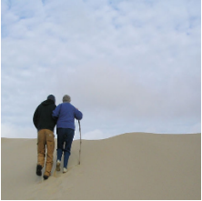
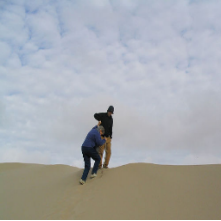

|
Shah Nawaz I am second PhD student in computer science at The Applied Recognition Technology Laboratory Arte-Lab , University of Insubria Italy with research interests in multi-modal fusion under supervisor of Prof. Ignazio Gallo. I have succesfully completed master program from Technical University of Eindhoven, Netherlands and Technical Univesity of Berlin, Germany under EIT Digital Master program. |

|
ResearchI'm interested in computer vision, machine learning, optimization, and image processing. Most of my research is about inferring the physical world (shape, motion, color, light, etc) from images. Representative papers are highlighted. |
News |
Publications |
|


|
Revisiting cross modal retrieval
Shah Nawaz, Muhammad Kamran Janjua, Alessandro Calefati, Ignazio Gallo arXiv preprint arXiv:1807.07364, 2018 This paper proposes a cross-modal retrieval system that leverages on image and text encoding. Most multimodal architectures employ separate networks for each modality to capture the semantic relationship between them. However, in our work image-text encoding can achieve comparable results in terms of cross-modal retrieval without having to use a separate network for each modality. We show that text encodings can capture semantic relationships between multiple modalities. In our knowledge, this work is the first of its kind in terms of employing a single network and fused image-text embedding for cross-modal retrieval. We evaluate our approach on two famous multimodal datasets: MS-COCO and Flickr30K. |
Miscellanea |
|
Dummy Item Link 1
Dummy Item Link 2 Dummy Item Link 3 Dummy Item Link 4 Dummy Item Link 5 Dummy Item Link 6 |
|
Design and source code from Jon Barron's website |